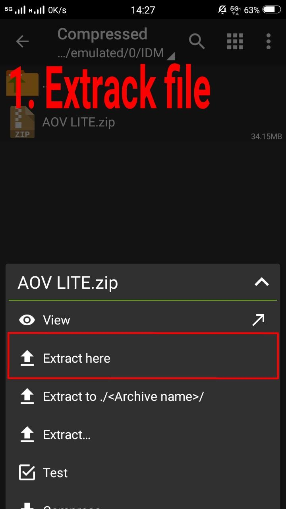
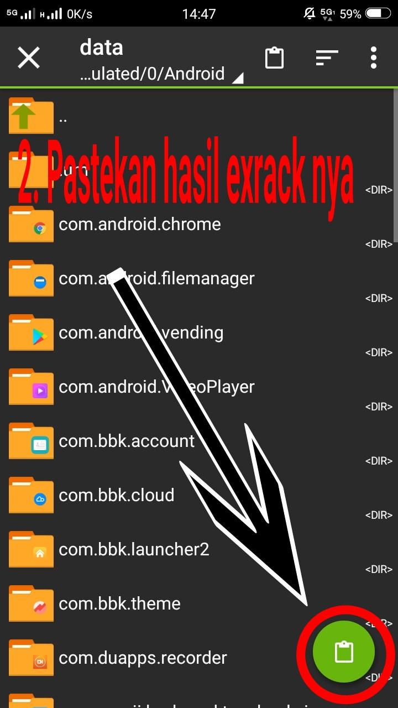
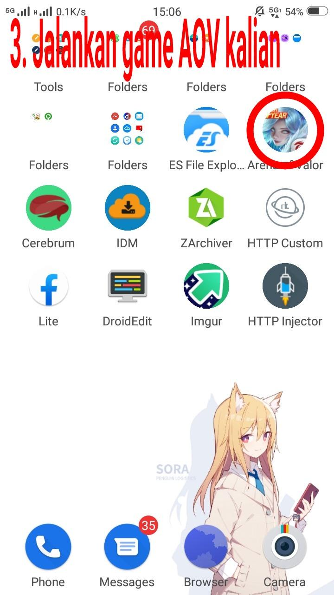

Cara pasang AOV lite
Sebelum memasang nya siapkan dulu bahan-bahan nya:
- file manager(ZArchiver,ES File Explorer,dll)
- file AOV lite(download di sini)
- pastikan udah punya OBB dan Apk AOV NYA
- Langkah pertama 
- Langkah kedua 
- Langkah ketiga 
- Langkah terakhir
udah siap?kita gas ke tutorial cara memasang aov lite
extrack file aov yang kita download tdi
cut/pindahkan file hasil extrack tadi ke android/data/disini(backup file lama untuk kembali ke original file)
coba buka aplikasi AOV kalian. Di coba dulu mode latihan ya...
main di mode quick match ,dan nikmati permainan tanpa kendala masalah lag